| 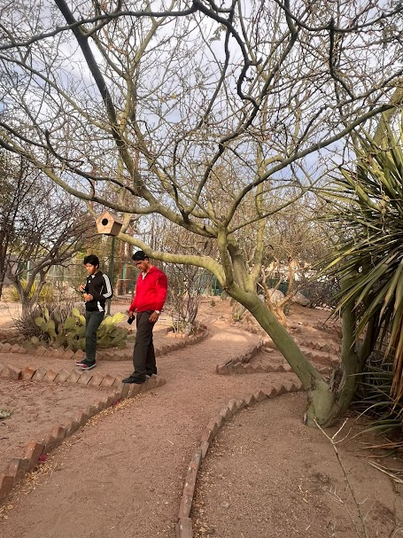 | 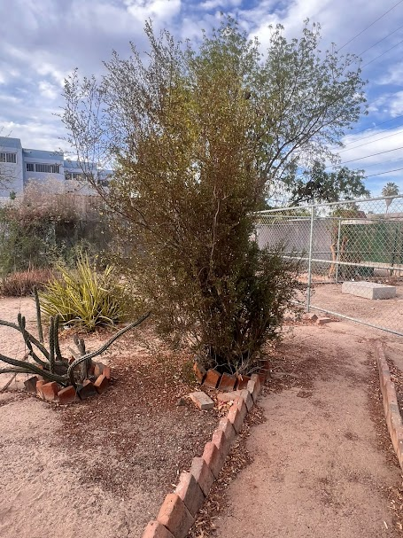 | 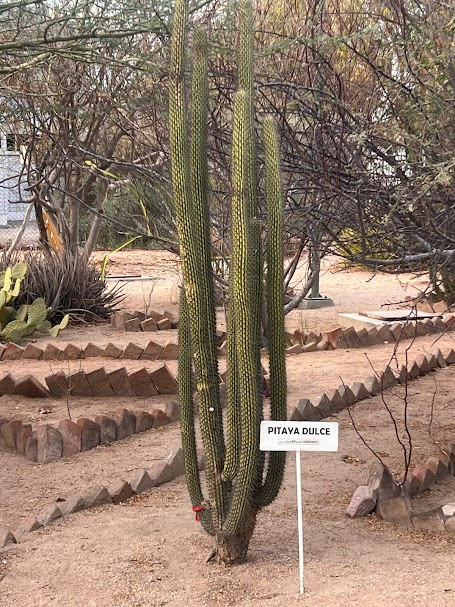 | 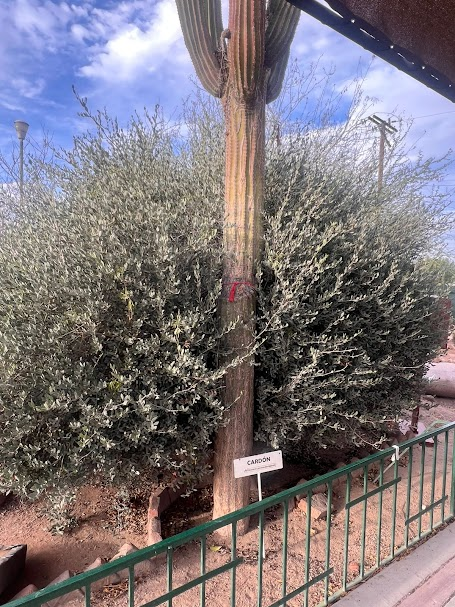 |
| acámás |
Chaparral.
The chaparral is a resilient plant community native to the Mediterranean climate regions of southwestern North America, including California and northern Mexico. Characterized by hot, dry summers and mild, wet winters, chaparral ecosystems are dominated by evergreen shrubs such as chamise (Adenostoma fasciculatum), manzanita (Arctostaphylos spp.), and scrub oak (Quercus spp.). |
Pitahaya Dulce
The sweet pitaya (Stenocereus thurberi), also known as the organ pipe cactus, is a columnar cactus native to the arid regions of northwestern Mexico and the southwestern United States. This cactus typically grows between 5 and 8 meters tall, with multiple cylindrical stems that can reach up to 20 cm in diameter. |
Cardón
The cardón (Pachycereus pringlei) is the tallest cactus species in the world, native to the arid regions of the Sonoran Desert in northwestern Mexico, including Baja California, Baja California Sur, and Sonora. This towering columnar cactus can reach up to 19 meters in height |
| 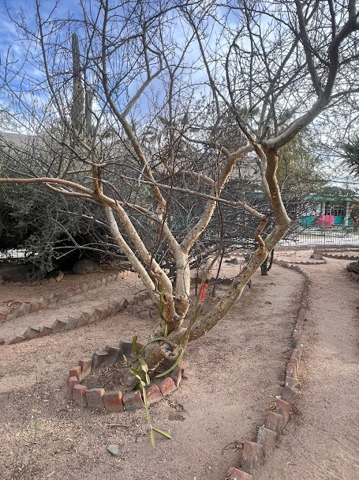 | 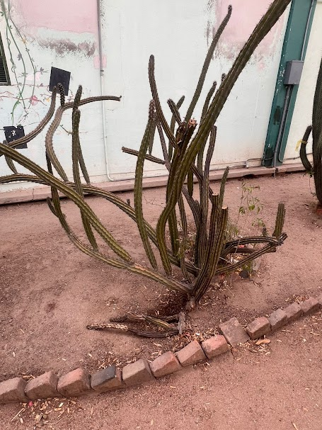 | 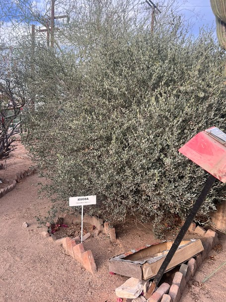 | 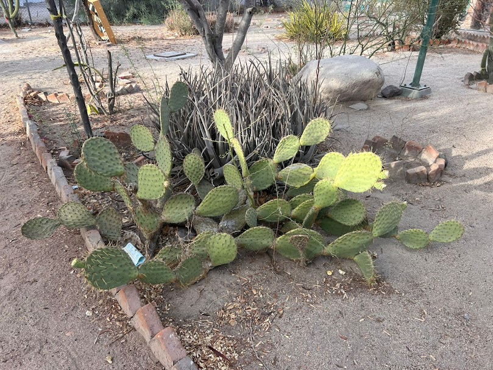 |
|
Palo verde
The palo verde (Parkinsonia aculeata) is a small, thorny tree native to arid regions of the southwestern United States, Mexico, and parts of South America. Its name, meaning "green stick" in Spanish, refers to its distinctive green bark, which carries out photosynthesis, allowing the tree to thrive in dry conditions. Typically growing between 3 to 7 meters tall |
Stenocereus
Stenocereus is a genus of cacti native to arid regions of Mexico, the southwestern United States, the Caribbean, and parts of Central and South America. This genus comprises approximately 23 species, ranging from towering columnar forms to low-spreading, creeping varieties |
Jojoba
The jojoba (Simmondsia chinensis) is a perennial shrub native to the Sonoran Desert, spanning parts of northwestern Mexico and the southwestern United States. This plant thrives in arid climates, withstanding high temperatures and drought conditions due to its deep root system and waxy-coated leaves that minimize water loss. Typically reaching heights of 1 to 3.5 meters, jojoba is dioecious, meaning male and female flowers are borne on separate plants. |
Nopal
The nopal (Opuntia ficus-indica), also known as prickly pear cactus, is a versatile plant native to Mexico and widely cultivated in arid regions. It is characterized by its flat, oval pads and vibrant, spiny fruits called "tunas." Both the pads and fruits are edible and have been integral to Mexican cuisine for centuries. |
| 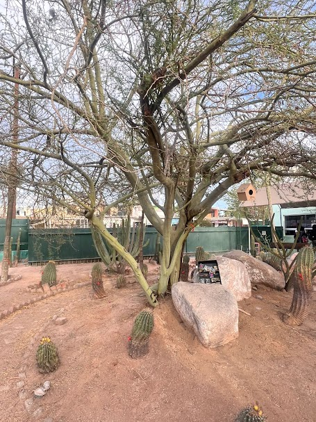 | 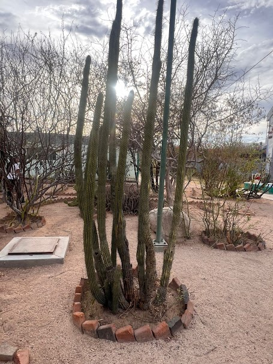 | 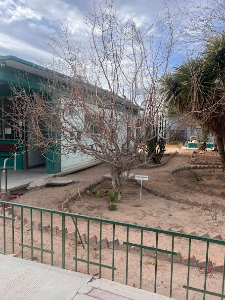 | 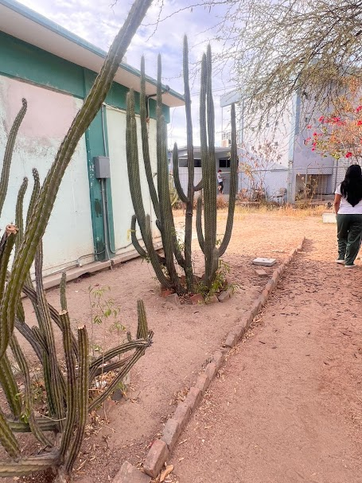 |
| Árbol |
Cactus
Cacti are remarkable plants known for their resilience in arid environments. They are primarily found in deserts and semi-desert regions, particularly across the Americas, where they have adapted to survive extreme heat and prolonged droughts. |
Copal Blanco
El copal blanco (Bursera bipinnata) es una resina aromática obtenida de un árbol nativo de México y Centroamérica, especialmente en regiones montañosas y semiáridas. Su uso se remonta a las culturas prehispánicas, como los mexicas, quienes lo utilizaban en rituales religiosos y ceremonias para comunicarse con lo divino. |
acamás |